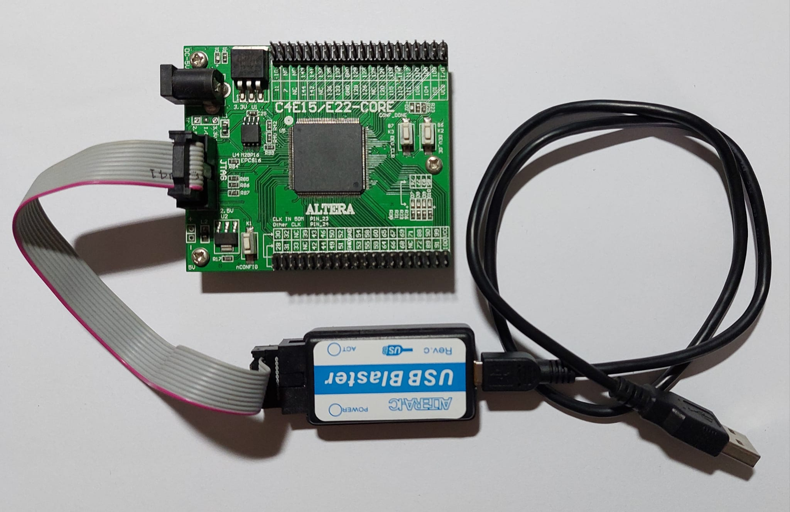
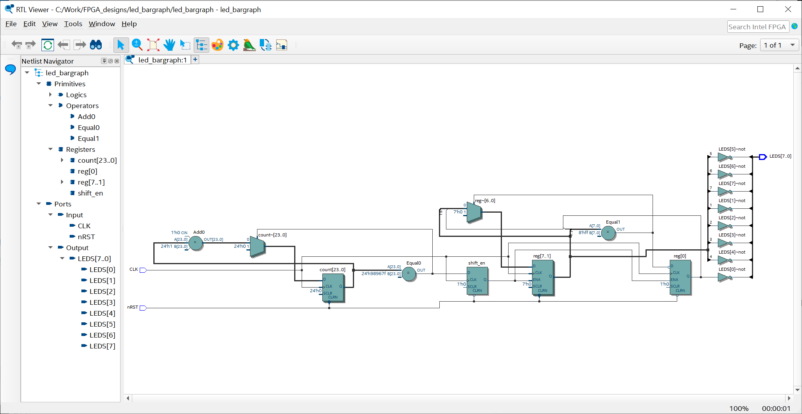

การทดลองใช้งาน Intel FPGA Prime Lite และบอร์ด Cyclone IV FPGA#
Keywords: FPGA, Intel/Altera Cyclone IV, Intel FPGA Quartus Prime Lite, VHDL / Verilog Coding
▷ ฮาร์ดแวร์และซอฟต์แวร์สำหรับการเรียนรู้การออกแบบวงจรสำหรับชิป FPGA#
บทความนี้นำเสนอ การใช้งานซอฟต์แวร์ที่มีชื่อว่า Intel Quartus Prime Lite Edition (Free) เพื่อการออกแบบวงจรดิจิทัล และนำไปใช้กับบอร์ดที่มีชิป FPGA (Field-Programmable Gate Array) ของบริษัท Intel/Altera ซอฟต์แวร์นี้สามารถดาวน์โหลดมาใช้ได้ฟรี (ในบทความนี้ ได้เลือกใช้เวอร์ชัน v22.1) มีให้เลือกใช้สำหรับระบบปฏิบัติการ Windows หรือ Linux ขนาด 64 บิต เท่านั้น
ในส่วนของฮาร์ดแวร์ ได้เลือกใช้ชิปตระกูล Cyclone IV ซึ่งถือว่า เป็นรุ่นราคาถูก (Low-Cost FPGA Family) และแม้ว่า ชิป Cyclone IV จะไม่ใช่ตระกูลใหม่ล่าสุด แต่ก็ถือว่า ยังมีการผลิตและจำหน่ายอยู่ และเหมาะสำหรับการเริ่มต้นในเรียนรู้การออกแบบวงจรสำหรับชิป FPGA สำหรับผู้ที่สนใจทั่วไป
บอร์ด FPGA ที่ได้เลือกนำมาทดลอง และสาธิตการใช้งานซอฟต์แวร์ ได้แก่
- บอร์ด FPGA จากประเทศจีน ที่มีชิป Cyclone IV EP4CE6E22C8N
- บอร์ด DE0-Nano ของบริษัท Terasic จากประเทศไต้หวัน (ราคาประมาณ 5,000 บาท)
บริษัท Terasic ยังมีบอร์ดทดลองที่ใช้ชิป FPGA และ SoC FPGA ของ Intel / Altera ให้เลือกให้อีกหลายแบบ แต่ก็มีราคาที่แตกต่างกันไป แต่บอร์ดจากประเทศจีนจะมีราคาถูกกว่า อย่างไรก็ตาม ข้อเสียของบอร์ดราคาถูกจากประเทศจีน อาจเป็นเรื่องเอกสารและคู่มือการใช้งาน
รูป: ตัวอย่างบอร์ด FPGA Cyclone IV จากประเทศจีน
▷ บอร์ด Cyclone IV EP4CExE22C8#
ลองมาดูบอร์ด FPGA ที่มีราคาไม่เกิน 1,000 บาท และผู้เขียนได้เคยซื้อมาลองใช้ ตั้งแต่ปีค.ศ. 2016 (แต่ปัจจุบันไม่มีจำหน่ายแล้ว)
รูป: ตัวอย่างบอร์ด Cyclone IV EP4CE6E22C8N (ชิปมีความจุลอจิก 6,272 LEs)
รูป: ตัวอย่างบอร์ด Cyclone IV EP4CE22E22C8 (ชิปมีความจุลอจิก 22,320 LEs)

รูป: ตัวอย่างบอร์ด Cyclone IV EP4CE22E22C8 + USB Blaster (clone)
ข้อมูลเชิงเทคนิค:
- FPGA: Altera Cyclone IV (EP4CE6E22C8N-QFP144)
- LEs (Logic Elements): 6,272
- PLLs: 2
- Embedded memory: 276,480 bits
- Flash Memory:
- 16Mbit SPI serial (SPI) Flash memory (M25P16 / EPCS16)
- JTAG socket for device programming
- Altera USB Blaster is required.
- Clock Input Pins:
PIN_23(with 50MHz crystal osc.)PIN_24(without crystal osc.)
- 1x Push Button (K1)
- for reconfiguring the FPGA chip (connected to
nCONFIGpin)
- for reconfiguring the FPGA chip (connected to
- 2x Push Buttons(K2, K3), active-low
PIN_86PIN_87
- 8x LEDs, active-low
- Pins:
PIN_73,PIN_74,PIN_75,PIN_76,PIN_77,PIN_83,PIN_84,PIN_85
- Pins:
- 73 I/O pins (support 3.3V logic level)
- 2.54mm spacing, male pin headers (2x20 pins)
- Onboard Voltage Regulators
- 3.3V voltage regulator (AMS1085CM-3.3V / 3A max.)
- 2.5V voltage regulator (AMS1117-2.5V)
- 1.2V voltage regulator (AMS1117-1.2V)
- Power Supply: DC jack
- DC input: 5V..12V (15V max.), center-positive
บอร์ด FPGA มีวงจรสร้างสัญญาณ Clock ความถี่คงที่ 50MHz สามารถนำไปใช้เป็นสัญญาณ Clock ของวงจรลอจิกที่ทำงานตามแบบ Synchronous Logic Design มีวงจรปุ่มกด K2 และ K3 ที่ทำงานแบบ Active-Low สามารถใช้เป็น User Inputs ได้ นอกจากนั้น ยังมีวงจร LED จำนวน 8 ชุด หรือ ตำแหน่ง สามารถใช้เป็น User Outputs / Light Indicators และจะให้แสงสว่างเมื่อเอาต์พุตเป็นลอจิก Low
ในการป้อนแรงดันไฟเลี้ยงกระแสตรงให้บอร์ด FPGA ที่ได้เลือกมาใช้งาน ตามข้อมูลเชิงเทคนิคที่ได้เสนอไป แนะนำให้ใช้สาย USB ที่มีปลายอีกด้านหนึ่งเป็น Jack ขนาด 5.5x2.1mm และใช้เสียบใช้งานกับพอร์ต USB ของคอมพิวเตอร์ โดยใช้แรงดันไฟเลี้ยง 5VDC
ขา I/O ถูกกำหนดไว้ให้ทำงานที่ระดับแรงดัน 3.3V และสามารถนำขาไปต่อใช้งานกับอุปกรณ์อื่นได้ผ่านคอนเนกเตอร์แบบ Pin Headers (สองแถว-ตัวผู้) และมีหมายเลขขา (Pin Numbers) ของชิป FPGA เขียนกำกับไว้บนบอร์ดด้วย
บอร์ด Cyclone IV EP4CE6E22C8N ที่ได้เลือกมาลองใช้งาน ไม่มีวงจร Altera USB Blaster อยู่บนบอร์ด ดังนั้นจะต้องใช้อุปกรณ์ภายนอก (ราคาถูก) สำหรับทำหน้าที่เป็น Altera USB Blaster (Clone) และเชื่อมต่อกับพอร์ต USB ของเครื่องผู้ใช้ในด้านหนึ่ง และพอร์ต JTAG บนบอร์ดอีกด้านหนึ่ง และอัปโหลดไฟล์ที่เรียกว่า FPGA Bitstream ไปยังชิป FPGA บนบอร์ด
▷ บอร์ด DE0-Nano Development & Education Board#
อีกบอร์ดหนึ่งคือ Terasic DE0-Nano ซึ่งผู้เขียนได้เคยซื้อมาใช้สำหรับการเรียนการสอนตั้งแต่ปีค.ศ. 2012 นอกจากชิป Cyclone IV FPGA (EP4CE22F17C6N) แล้วยังมีวงจรหรือไอซีประเภทอื่นอยู่บนบอร์ดด้วย
ข้อมูลเชิงเทคนิค: ไฟล์คู่มือการใช้งานของบอร์ด
- FPGA: Altera Cyclone IV (EP4CE22F17C6N)
- LEs (Logic Elements): 22,320
- PLLs: 4
- Embedded memory: 594 Kbits
- On-board USB-Blaster: for device programming
- FPGA Serial Configuration Device (EPCS)
- 8x Green LEDs
- 2x Debounced Push Buttons
- 4x DIP Switches
- SDRAM: 32MB
- EEPROM (I2C): 2Kbits
- ADI ADXL345 (I2C): 3-axis accelerometer
- NS ADC128S022: 8-Channel, 12-bit A/D Converter
- 50MHz clock oscillator
- Power Supply
- USB Type mini-AB port (5V)
- Two DC 5V pins of the GPIO headers (5V)
- 2-pin external power header (3.6-5.7V)
- Expansion Headers
- Two 40-pin Headers
- One 26-pin header
- Price: USD $108 (Academic Price: USD $87)
รูป: บอร์ด DE0-Nano Development & Education Board
▷ ขั้นตอนการใช้งาน Quartus Prime Lite Edition#
ขั้นตอนการสร้างวงจรสำหรับทดลองใช้กับบอร์ด FPGA โดยทั่วไป มีดังนี้
- เปิดโปรแกรม Intel FPGA Quartus Prime Lite
- สร้างโปรเจกต์ใหม่ (Create New Project)
- เลือกชิปเป้าหมาย (Select Target FPGA Device) ที่ตรงกับชิปบนบอร์ดทดลอง
- สร้างไฟล์และแก้ไขโค้ด VHDL (Create New / Edit VHDL File) และเพิ่มให้เป็นส่วนหนึ่งของโปรเจกต์
- คอมไพล์โค้ดในโปรเจกต์และสังเคราะห์วงจร (Compile Code & Synthesize Logic Circuit)
- กำหนดหมายเลขขาของชิปสำหรับสัญญาณ I/O ของวงจร (Assign I/O Pin Numbers)
- แปลงให้เป็นวงจรสำหรับชิปเป้าหมายและสร้างไฟล์ "บิตสตรีม" (Generate Bitstream)
- ดาวน์โหลดไฟล์บิตสตรีมลงในชิปเป้าหมายบนบอร์ดทดลอง (Program the Device) ผ่าน JTAG Port
ข้อสังเกต: ในบทความนี้ ยังไม่เน้นเรื่องการวิเคราะห์การทำงานเชิงเวลาของวงจรดิจิทัล (Timing Analysis) และยังไม่กล่าวถึงการจำลองการทำงานของโค้ด VHDL และการเขียนโค้ด VHDL Testbench เพื่อตรวจสอบการทำงานด้วยการจำลองการทำงานเชิงลอจิก (Logic Simulation) โดยใช้โปรแกรม อย่างเช่น ModelSim-Intel FPGA Starter Edition หรือ Questa-Intel FPGA Starter Edition
รูป: หน้าต่างหลักของโปรแกรม Intel Quartus Prime Lite
รูป: แถบแนวนอนของไอคอนสำหรับการเลือกทำคำสั่งในขั้นตอนต่าง ๆ ของ FPGA Design Flow
เริ่มขั้นตอนจากเมนูคำสั่ง File > New Project Wizard แล้วทำขั้นตอนการตั้งค่า
- ตั้งชื่อโปรเจกต์ใหม่ และเลือกไดเรกทอรีสำหรับเก็บไฟล์ของโปรเจกต์ (ตัวอย่างนี้ชื่อ
led_bargraph) - เลือกสร้างโปรเจกต์แบบว่างเปล่า (Empty Project) ไม่ได้เลือกจากเทมเพลต (Template)
- เพิ่มไฟล์เข้าในโปรเจกต์ (ในกรณีนี้่ยังไม่มี ให้กดปุ่ม Next)
- เลือกชิปเป้าหมาย (Target Device) ในตัวอย่างนี้คือ Cyclone IV E EP4C6EE22C8
- ตรวจสอบการสรุปข้อมูลเกี่ยวกับการสร้างโปรเจกต์ใหม่ ก่อนทำขั้นตอนถัดไป
เมื่อสร้างโปรเจกต์ใหม่แล้ว แต่ยังเป็นโปรเจกต์ว่างเปล่า ยังไม่มีไฟล์ใด ๆ ถัดไป ให้สร้างไฟล์ใหม่ (New File) จากเมนูคำสั่ง แล้วเลือกชนิดของไฟล์ VHDL เพื่อทดลองเขียนโค้ดตามตัวอย่าง (LED Bargraph) เพื่อแสดงสถานะด้วย LED จำนวน 8 ดวง
- สร้างไฟล์ใหม่ ให้เป็นส่วนหนึ่งของโปรเจกต์ โดยเลือกชนิดของไฟล์ใหม่เป็น VHDL File
แล้วใส่โค้ดตัวอย่างลงในไฟล์ .vhd บันทึกไฟล์เป็นled_bargraph.vhd - เลือกไฟล์ VHDL หรือชื่อ
led_bargraphให้เป็น Top-level Entity ของวงจร - ทำขั้นตอน Analysis & Synthesis เพื่อคอมไพล์โค้ดและแปลงโค้ดให้เป็นวงจรดิจิทัล
- ดูผลสรุปการทำขั้นตอน Analysis & Synthesis ถ้าไม่มีข้อผิดพลาด ให้ทำขั้นตอนถัดไป
------------------------------------------------------------------
library ieee;
use ieee.std_logic_1164.all;
use ieee.numeric_std.all;
------------------------------------------------------------------
entity LED_BARGRAPH is
generic ( WIDTH : natural := 8 );
port(
CLK : in std_logic;
nRST : in std_logic;
LEDS : out std_logic_vector(WIDTH-1 downto 0)
);
end LED_BARGRAPH;
architecture SYNTH of LED_BARGRAPH is
constant ALL_ONES : unsigned := to_unsigned(2**WIDTH-1,WIDTH);
constant COUNT_PERIOD : integer := 10000000;
subtype count_t is integer range 0 to (COUNT_PERIOD-1);
signal count : count_t := 0;
signal reg : std_logic_vector(WIDTH-1 downto 0);
signal shift_en : std_logic;
begin
LEDS <= not reg; -- used the register's bits (inverted) for LEDs
process (nRST, CLK) begin
if nRST = '0' then
count <= 0;
shift_en <= '0';
elsif rising_edge(CLK) then
-- check whether the counter reaches the max. value.
if count = (COUNT_PERIOD-1) then
count <= 0; -- reset the counter.
shift_en <= '1'; -- enable register shift.
else
count <= count+1; -- increment counter by 1.
shift_en <= '0'; -- disable register shift.
end if;
end if;
end process;
process (nRST, CLK) begin
if nRST = '0' then
reg <= (others => '0'); -- clear the shift register.
elsif rising_edge(CLK) then
if shift_en='1' then -- register shifting is enabled.
if reg = std_logic_vector( ALL_ONES ) then
-- clear the shift register.
reg <= (others => '0');
else
-- shift left, insert '1' as LSB.
reg <= reg(reg'left-1 downto 0) & '1';
end if;
end if;
end if;
end process;
end SYNTH;

เมื่อได้ทำขั้นตอนแปลงโค้ด VHDL ให้เป็นวงจรดิจิทัลโดยอัตโนมัติ (Synthesis) ถัดไป จะต้องกำหนดและเลือกใช้ขาของชิป FPGA ระบุว่า ขาใดจะใช้เป็นขาสัญญาณอินพุต-เอาต์พุตของวงจรบ้าง เช่น ขาใดจะเป็นขาอินพุตสำหรับสัญญาณ Clock ของวงจร เป็นต้น
- เรียกใช้งานโปรแกรม Pin Planner เพื่อกำหนดเลือกขาของชิป FPGA สำหรับขา I/O ของวงจร
(ได้แก่ขาสัญญาณชื่อ
CLK,nRST,LEDS[7:0]) เลือกหมายเลขขาของชิป FPGA สำหรับสัญญาณต่าง ๆ ของวงจรตามตัวอย่าง และใช้ระดับแรงดัน 3.3V LVCMOS เมื่อกำหนดค่าต่าง ๆ แล้ว ให้ปิดหน้าต่าง Pin Planner - ทำขั้นตอน Start Compilation เพื่อทำขั้นตอนถัดไป และให้ได้ไฟล์เอาต์พุต Bitstream (.sof)
เมื่อได้ตั้งค่าต่าง ๆ สำหรับโปรเจกต์แล้ว เช่น การใช้งาน GPIO ของชิปแล้ว ก็สามารถดูรายการในไฟล์ .qdf ของโปรเจกต์
(แสดงข้อความเป็นตัวอย่างบางส่วนของไฟล์ดังกล่าว)
set_global_assignment -name FAMILY "Cyclone IV E"
set_global_assignment -name DEVICE EP4CE6E22C8
set_global_assignment -name TOP_LEVEL_ENTITY led_bargraph
set_location_assignment PIN_86 -to nRST
set_location_assignment PIN_73 -to LEDS[0]
set_location_assignment PIN_74 -to LEDS[1]
set_location_assignment PIN_75 -to LEDS[2]
set_location_assignment PIN_76 -to LEDS[3]
set_location_assignment PIN_77 -to LEDS[4]
set_location_assignment PIN_83 -to LEDS[5]
set_location_assignment PIN_84 -to LEDS[6]
set_location_assignment PIN_85 -to LEDS[7]
set_location_assignment PIN_23 -to CLK
set_instance_assignment -name IO_STANDARD "3.3-V LVCMOS" -to LEDS[7]
set_instance_assignment -name IO_STANDARD "3.3-V LVCMOS" -to LEDS[6]
set_instance_assignment -name IO_STANDARD "3.3-V LVCMOS" -to LEDS[5]
set_instance_assignment -name IO_STANDARD "3.3-V LVCMOS" -to LEDS[4]
set_instance_assignment -name IO_STANDARD "3.3-V LVCMOS" -to LEDS[3]
set_instance_assignment -name IO_STANDARD "3.3-V LVCMOS" -to LEDS[2]
set_instance_assignment -name IO_STANDARD "3.3-V LVCMOS" -to LEDS[1]
set_instance_assignment -name IO_STANDARD "3.3-V LVCMOS" -to LEDS[0]
set_instance_assignment -name IO_STANDARD "3.3-V LVCMOS" -to LEDS
set_instance_assignment -name IO_STANDARD "3.3-V LVCMOS" -to nRST
set_instance_assignment -name IO_STANDARD "3.3-V LVCMOS" -to CLK
เมื่อทำขั้นตอนได้เสร็จสมบรูณ์แล้ว ถัดไปเป็นการโปรแกรมไฟล์บิตสตรีม .sof ไปยังบอร์ดทดลอง โดยใช้โปรแกรมที่มีชื่อว่า Programmer ซึ่งเป็นส่วนหนึ่งของ Intel Quartus Prime Lite
จากรูปจะเห็นได้ โปรแกรมสามารถมองเห็นอุปกรณ์ USB Blaster ที่เชื่อมต่อกับพอร์ต USB ของเครื่องผู้ใช้
เมื่อกดปุ่ม Start เพื่ออัปโหลดไฟล์ไปยังชิป FPGA ได้สำเร็จ จะมองเห็นการเปลี่ยนแปลงของ LEDs ทั้ง 8 ดวง

ถ้าจะลองดูว่า โค้ดตัวอย่างในภาษา VHDL ที่ใช้อธิบายการทำงานของวงจรดิจิทัล ถูกคอมไพล์และแปลงให้เป็นวงจรดิจิทัล ได้อย่างไร ก็สามารถดูได้จากผังวงจรซึ่งแสดงโครงสร้างในระดับ RTL (Register-Transfer Level) โดยคลิกดูจากเมนูคำสั่ง Tools > Netlist Viewer > RTL Viewer
วงจรในระดับ RTL จะประกอบด้วยวงจรย่อยหรือบล็อก เช่น ลอจิกเกตพื้นฐาน ฟลิปฟลอป (Flip-Flops) วงจรบวกหรือลบเชิงเลข วงจรเปรียบเทียบค่าเชิงเลข วงจรรีจิสเตอร์ วงจรเลือกสัญญาณหรือมัลติเพล็กเซอร์ (Multiplexers) เป็นต้น

หรือถ้าจะดูผังวงจรในเชิงโครงสร้าง (Structural View) ที่มีการแปลงแล้วให้เป็นวงจรซึ่งประกอบด้วยองค์ประกอบพื้นฐาน (Logic Elements) ภายในชิป FPGA ก็ดูได้จาก Tools > Netlist Viewer > Post-Fitting Technology Map Viewer
▷ การทดลองกับบอร์ด DE0-Nano#
โค้ดตัวอย่าง VHDL สามารถนำมาใช้กับบอร์ด Terasic DE0-Nano ได้ แม้ว่าจะใช้ชิป Cyclone IV FPGA ในตระกูลเดียวกัน แต่ก็ใช้ชิปเบอร์ EP4CE22F17C6 ที่แตกต่างไป นอกจากนั้น บอร์ด DE0-Nano มีวงจร LED อยู่ 8 ดวง สามารถใช้งานได้เช่นกัน (ทำงานแบบ Active-High) แต่จะต้องเลือกหมายเลขขา Pin Numbers ให้ถูกต้องด้วย สัญญาณอินพุตสำหรับ Clock ก็มีวงจงสร้างสัญญาณ Clock ความถี่ 50MHz เช่นกัน
ตัวอย่าง (บางส่วน) สำหรับการตั้งค่าในไฟล์ *.qsf ของโปรเจกต์ เพื่อใช้วงจรตัวอย่างกับบอร์ด
DE0-Nano มีดังนี้
set_global_assignment -name FAMILY "Cyclone IV E"
set_global_assignment -name DEVICE EP4CE22F17C6
set_global_assignment -name TOP_LEVEL_ENTITY led_bargraph
set_location_assignment PIN_J15 -to nRST
set_location_assignment PIN_A15 -to LEDS[0]
set_location_assignment PIN_A13 -to LEDS[1]
set_location_assignment PIN_B13 -to LEDS[2]
set_location_assignment PIN_A11 -to LEDS[3]
set_location_assignment PIN_D1 -to LEDS[4]
set_location_assignment PIN_F3 -to LEDS[5]
set_location_assignment PIN_B1 -to LEDS[6]
set_location_assignment PIN_L3 -to LEDS[7]
set_location_assignment PIN_R8 -to CLK
set_instance_assignment -name IO_STANDARD "3.3-V LVCMOS" -to LEDS[7]
set_instance_assignment -name IO_STANDARD "3.3-V LVCMOS" -to LEDS[6]
set_instance_assignment -name IO_STANDARD "3.3-V LVCMOS" -to LEDS[5]
set_instance_assignment -name IO_STANDARD "3.3-V LVCMOS" -to LEDS[4]
set_instance_assignment -name IO_STANDARD "3.3-V LVCMOS" -to LEDS[3]
set_instance_assignment -name IO_STANDARD "3.3-V LVCMOS" -to LEDS[2]
set_instance_assignment -name IO_STANDARD "3.3-V LVCMOS" -to LEDS[1]
set_instance_assignment -name IO_STANDARD "3.3-V LVCMOS" -to LEDS[0]
set_instance_assignment -name IO_STANDARD "3.3-V LVCMOS" -to LEDS
set_instance_assignment -name IO_STANDARD "3.3-V LVCMOS" -to nRST
set_instance_assignment -name IO_STANDARD "3.3-V LVCMOS" -to CLK
เมื่อตั้งค่าได้ถูกต้องแล้ว ก็ทำขั้นตอน Start Compilation เพื่อให้ได้ไฟล์บิตสตรีม แล้วอัปโหลดไฟล์ดังกล่าวไปยังบอร์ด DE0-Nano
▷ โค้ดตัวอย่าง Verilog HDL#
ลองมาดูโค้ดตัวอย่างในภาษา Verilog HDL ที่ให้ผลการทำงานเหมือนโค้ดตัวอย่างในภาษา VHDL
โดยให้สร้างไฟล์ led_bargraph.v เพื่อใช้แทนที่ไฟล์ led_bargraph.vhd
และกำหนดให้เป็น Top-level entity ของวงจร
module led_bargraph
#( parameter WIDTH = 8 )
(
input wire CLK,
input wire nRST,
output reg [WIDTH-1:0] LEDS
);
localparam COUNT_PERIOD = 10000000;
wire [WIDTH-1:0] ALL_ONES = (1 << WIDTH) - 1;
reg [WIDTH-1:0] reg_data;
reg [31:0] count = 0;
reg shift_en;
always @(posedge CLK or negedge nRST) begin
if (nRST == 1'b0) begin
count <= 0; // reset the counter.
shift_en <= 1'b0; // clear the shift enable (low).
end
else begin
// check whether the counter reaches the max. value.
if (count == COUNT_PERIOD-1) begin
count <= 0; // reset counter.
shift_en <= 1'b1; // set shift enable (high).
end
else begin
count <= count + 1; // increment counter by 1.
shift_en <= 1'b0; // clear the shift enable (low).
end
end
end
always @(posedge CLK or negedge nRST) begin
if (nRST == 1'b0) begin
reg_data <= 0; // reset 8-bit register data.
end
else begin
if (shift_en == 1'b1) begin // if shift enabled
// check whether all bits of the counter are 1's.
if (reg_data == ALL_ONES) begin
// reset 8-bit register data.
reg_data <= 0;
end
else begin
// shift the 8-bit register to left and
// append '1' to the right (LSB).
reg_data <= {reg_data[WIDTH-2:0], 1'b1};
end
end
end
end
always @(reg_data) begin
// assign 8-bit register to LED outputs.
LEDS <= ~reg_data;
end
endmodule
รูป: การคอมไพล์โค้ดภาษา Verilog HDL
▷ กล่าวสรุป#
บทความนี้ได้นำเสนอการใช้งานซอฟต์แวร์ Intel FPGA Prime Lite เวอร์ชัน v22.1 สำหรับระบบปฏิบัติการ Windows 10 (64-bit) และนำมาทดลองใช้งานในเบื้องต้น เพื่อสาธิตการแปลงวงจรตัวอย่างที่เขียนโค้ดด้วยภาษา VHDL และ Verilog แล้วแปลงให้เป็นวงจรดิจิทัล นำไปสาธิตการทำงานโดยใช้บอร์ด FPGA Cyclone IV จำนวน 2 บอร์ด ที่มีความแตกต่างกัน
This work is licensed under a Creative Commons Attribution-ShareAlike 4.0 International License.
Created: 2023-07-01 | Last Updated: 2023-07-04